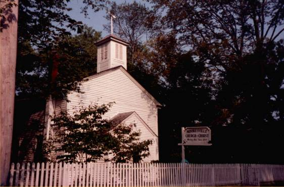

Seu tio, um Neurocientista de renome, corta contato com sua família e desaparece por anos depois da morte de sua esposa. Derrepente ele te liga pedindo para que você cuide de seus animais, pois irá a uma viagem de trabalho.
Você aceita a ajudá-lo, então parte rumo ao estado do Alabama, na cidade que seu tio agora mora: Mooresville.
Chegando na casa de seu tio Tyler, você procura os animais que lhe foi solicitado para cuidar, após vasculhar a enorme casa de seu tio, você descobre a verdade assustadora por trás do estranho convite feito por ele.

Sua missão é:
Se esconder, achar uma saída, SOBREVIVER